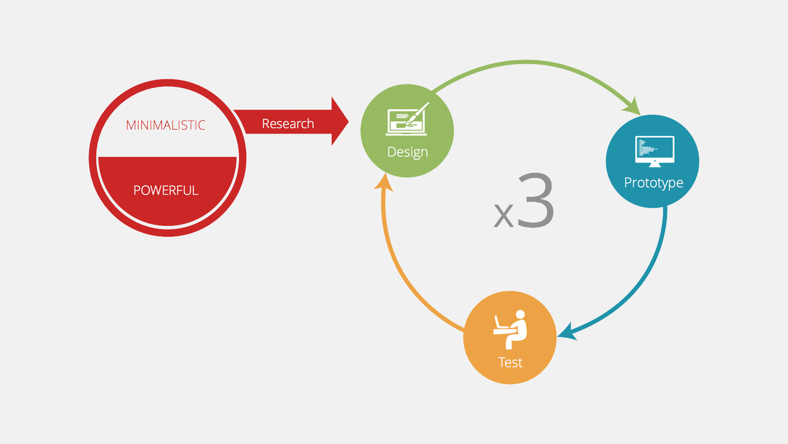
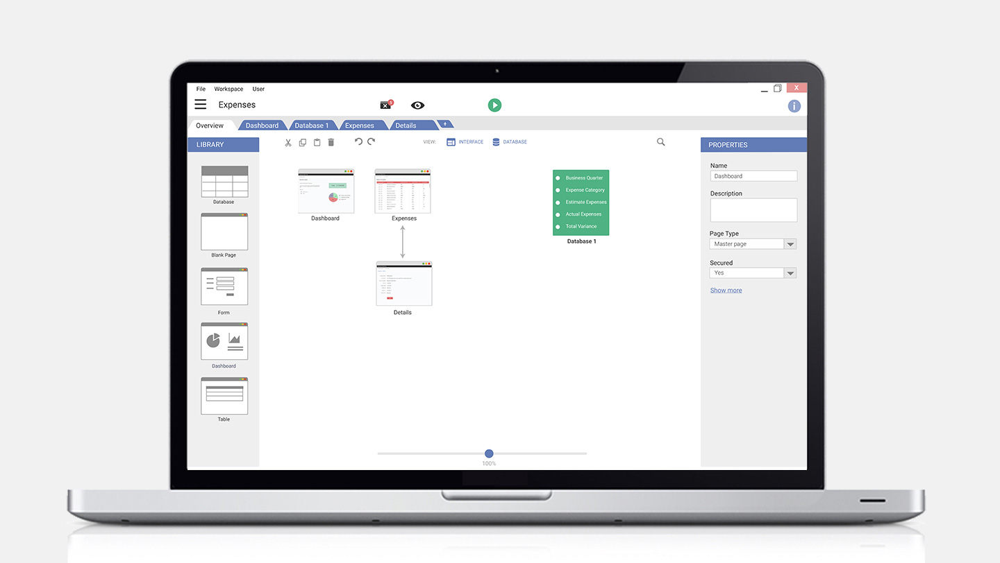

prev
Falcon CRM
Service Studio Redesign.
Citizen Developers.
Citizen Developer is the a core concept of this project and to guides us in who we are designing for we created some personas. Luís is a senior finance manager and he has been doing this for a long time. In his role he wants to manage his company expanse and has this idea for an application. However, if he goes through the regular process and asks the IT of his company for it it can take a long time, even more than 6 months. So he wants to be able to it himself really quickly.

Research.
We spent the first half of the project doing research.

Design Process.
Based on what we discovered we moved into the design phase. Our design process had 3 iterations, each with design followed by prototyping and then user testing. With each iteration the design was refined based on the findings and feedback from the previous iteration. Keeping in mind the time constraint, we tackled each subsequent iteration with higher fidelity and more focused areas for design.

Papper Prototype.
We started the process with a design sprint. We then created wireframes for the whole system and tested it in a papper prototype.

Pdf Prototype.
For the second iteration we created mid fidelity mocks and tested it in a pdf click through prototype.

Collaborative Ideation.
Since we gained a lot of valuable feedback from our user tests we decided to do something similar to the first design sprint but this time including the client.

Partially working Prototypw.
With the ideation results we created hifi mocks for a specific use case and created a partially workig prototype in axure.

User tests.
We then tested it out one last time, this time with actual citizen developers. We also tested with an expert of the current Service Studio to address some scalability concerns..

Final Design.
We were able to polish most of our design concepts and validate our design decisions. Next we will pass it along to out systems for further development and implementation. You can check the project website at http://frontier.m-iti.org. Our final report is available here.